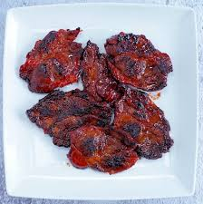

Tocino

Description
Tocino is bacon in Spanish, typically made from the pork belly and often formed into cubes in Spain.
Authentic filipino food!
Ingredients
- 2 pounds pork (butt, shoulder, ham or belly) - cut into ¼ inch thin
- ¾ cup brown sugar
- 1 ½ tablespoons salt
- 3 cloves garlic - finely minced
- 1 tablespoon soy sauce
- 2 tablespoons rice vinegar
- ¼ cup fruit juice, (pineapple, apple) (optional)
- ½ tablespoons finely ground black pepper
- 1 tablespoon rice flour (optional)
- Natural red food color (optional)
Steps
- In a big bowl, combine all ingredients except for the pork slices. Mix until well blended.
- Add the pork and mix using the hand, use hand gloves to avoid stains. Mix for several minutes to an hour.
- Transfer to a container with a cover and let it sit overnight on the counter.
- Mix again for a couple of times before putting in the fridge. Cure for 24 hours or up to 3 days. Can be frozen afterwards and stored longer.